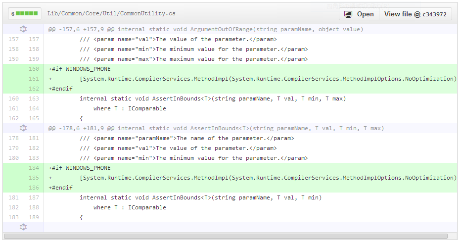

Windows Azure Storage 3.0.2 Hotfix
2014/1/4 Windows Azure Storage 3.0.2 がリリースされました。 2013/11/27 3.0のリリース 「 Windows Azure Storage Release - CORS、JSON、Minute Metrics の紹介 」、2013/12/11 の 3.0.1 hotfix 「 Windows Azure Storage Client 3.0.1 」 に続く３回めのリリースです。

修正点
- All (WP): 多くのAPIで ArgumentOutOfRangeException になる問題の修正
- Queues: 存在するqueueの再度作成で、NullReferenceException になる問題を修正
- Tables: レスポンスがparseできなかったときに、TableServiceContext が NullReferenceException になる問題を修正
- Tables (RT): JSON形式がまだRT library でサポートされていないため、ユーザーは、RTで RequestOptions に JsonFullMetadata formart を設定することはできません
コードを確認したところ、最初のやつが興味深いものでした。
1. All (WP): 多くのAPIで ArgumentOutOfRangeException になる問題の修正
対象は、Windows Phone プラットフォームだけで特定のAPIでなく全般的に発生します。 関連する Issue として 、 System.ArgumentOutOfRangeException in Microsoft.WindowsAzure.Storage.Table.CloudTable.EndExecute が出ています。
共通で使っている、API内のパラメータのバウンダリー検査関数（ AssertInBounds ）が動いていなくてあちこちで問題が発生するということになっていたようです。（そうは言っても、テストはしているので、そうそう起きるわけでは無いとは思います）
Storage Client Library 3.0.2 のPR でdiffを見みると、WINDOWS_PHONEだけで下記のように修正されていました。
#if WINDOWS_PHONE で AssertInBounds に、 [System.Runtime.CompilerServices.MethodImpl(System.Runtime.CompilerServices.MethodImplOptions.NoOptimization)] を指定しています。この指定は、JITやNGENでのコード最適化を抑制するもので、 [1] Windows Phone の場合だけ native code 生成に問題があったので抑制するオプションを付けたということです。
Windows Phone というだけで、どのような場合に発生する問題かなどわかりませんが、WP アプリのコードが挙動不審の場合は試してみると良いかもしれません。Storage Clinet Library内では、この方法で修正されているようなので問題は無いのですが、普通に書いたコードでも起きるとすると、ちょっと困りますね。もう少し詳しい情報が欲しいところです。 [2]
これ以外は、あまり気になる点はありませんでした。互換性の問題も無さそうなので、3系のStorage Clinetは 3.0.2 を使うのがお勧めです。
2014/1/11 追記 Windows Phoneの問題
PR に質問 に返事を貰いました。
この問題は、Windows Phone でだけ起き、assemblyに、AssertInBoundsとAssertInBounds 両方が存在する場合に、最適化で実行時にAssertInBoundsの間違ったインスタンス化を選択することによって引き起こされる
internal static void AssertInBounds<T>(string paramName, T val, T min, T max) where T : IComparable と、 internal static void AssertInBounds<T>(string paramName, T val, T min) where T : IComparable の両方が同一 assembly にあるのが問題のようです。 必ず起きるというわけでも無さそうなので、Windows Phone で嵌ったら思い出してみるという程度で良さそうです。
| [1] | About System.Runtime.CompilerServices.MethodImplOptions |
| [2] | We escalated this internally ... |
[Resolved] Windows Azure Storage Known Issues 2013/11
Windows Azure Storage Known Issues 2013/11 の既知の問題が解決されたとアナウンスがありました。 Windows Azure Storage Known Issues (November 2013) [Resolved] どんな感じになったのかを確認しました。
引用

問題点の確認
問題点は下記の3つが有りました。「3」は、既に、 Storage Client 2.1.0.4 以降での Cast問題の修正 で、Client Library 2.1.0.4、3.xで修正確認ができているので、ここでは1と2を確認します。
SASとコンテナの前の “//” 問題
下記のようなプログラムで確認しました。Signitureの生成結果を確認しやすいように、2013/12/01から一年有効なREADのSASにしています。 Storage Client 2.1.0.4 では、2012-02-12 versionが使われて、コンテナの前が "//" になっていても動きましたが、3.0.1だと、2013-08-15 versionが使われ、400 のエラーで弾かれるという結果になりました。もともと、 "//" と書いたら "/" と解釈されるというのはあまりイケてない動きなので、古いバージョンのみ互換性を持つように変更して新しいものでは動作変更ということにしたのは妥当な落とし所かと思います。Storage Versionによって動作が違うようです。
private static string GetSASUrl(CloudStorageAccount storageAccount, string containerName, string blobName)
{
var blobClient = storageAccount.CreateCloudBlobClient();
var container = blobClient.GetContainerReference(containerName);
var blockBlob = container.GetBlockBlobReference(blobName);
var startDate = DateTime.Parse("2013/12/01");
var sas = blockBlob.GetSharedAccessSignature(new SharedAccessBlobPolicy()
{
Permissions = SharedAccessBlobPermissions.Read,
SharedAccessStartTime = startDate,
SharedAccessExpiryTime = startDate.AddYears(1)
});
return blockBlob.Uri.ToString() + sas;
}
2.1.0.4での確認結果
Install-Package WindowsAzure.Storage -Version 2.1.0.4 で2.1.0.4を入れます。何度も、違うバージョンのライブラリを入れ替えて使っていて、混乱したので念のためpackage.configの内容を併記します。
<?xml version="1.0" encoding="utf-8"?>
<packages>
<package id="Microsoft.Data.Edm" version="5.2.0" targetFramework="net451" />
<package id="Microsoft.Data.OData" version="5.2.0" targetFramework="net451" />
<package id="Microsoft.WindowsAzure.ConfigurationManager" version="1.8.0.0" targetFramework="net451" />
<package id="System.Spatial" version="5.2.0" targetFramework="net451" />
<package id="WindowsAzure.Storage" version="2.1.0.4" targetFramework="net451" />
</packages>
生成されたURLで成功を確認
{kind=link}
コンテナの前に、 "/" を追加して確認、成功！
sv=2012-02-12 になっていて、versionがわかります。
3.0.1での確認結果
Install-Package WindowsAzure.Storage で最新版、3.0.1で確認
<?xml version="1.0" encoding="utf-8"?>
<packages>
<package id="Microsoft.Data.Edm" version="5.6.0" targetFramework="net451" />
<package id="Microsoft.Data.OData" version="5.6.0" targetFramework="net451" />
<package id="Microsoft.Data.Services.Client" version="5.6.0" targetFramework="net451" />
<package id="Microsoft.WindowsAzure.ConfigurationManager" version="1.8.0.0" targetFramework="net451" />
<package id="Newtonsoft.Json" version="5.0.8" targetFramework="net451" />
<package id="System.Spatial" version="5.6.0" targetFramework="net451" />
<package id="WindowsAzure.Storage" version="3.0.1.0" targetFramework="net451" />
</packages>
生成されたURLで成功を確認
![http://test.blob.core.windows.net/images/photo.jpg?sv=2013-08-15&sr=b&sig=[signiture]&se=2014-11-30T15%3A00%3A00Z&sp=r](http://test.blob.core.windows.net/images/photo.jpg?sv=2013-08-15&sr=b&sig=[signiture]&se=2014-11-30T15%3A00%3A00Z&sp=r){kind=link}
コンテナの前に、 "/" を追加。これは失敗します。
レスポンスを見ると下記のようになっていました。（XMLは整形してあります）
HTTP/1.1 400 The requested URI does not represent any resource on the server.
Content-Length: 434
Content-Type: application/xml
Server: Microsoft-HTTPAPI/2.0
x-ms-request-id: a9275897-8810-48b2-bcd5-d45af85f6f14
Date: Fri, 27 Dec 2013 12:34:46 GMT
<?xml version="1.0" encoding="utf-8"?>
<Error>
<Code>InvalidUri</Code>
<Message>
The requested URI does not represent any resource on the server.
RequestId:a9275897-8810-48b2-bcd5-d45af85f6f14
Time:2013-12-27T12:34:46.6851586Z
</Message>
<UriPath>
http://test.blob.core.windows.net//images/photo.jpg?sv=2013-08-15&sr=b&sig=[signiture]&se=2014-11-30T15:00:00Z&sp=r
</UriPath>
</Error>
TableのDataServiceContext.ResolveName 指定 問題
同様に、下記のようなコードを使って、2.1.0.4と、3.0.1で確認しました。 2.1.0.4 では、動作しましたが 3.0.1 では動きませんでした。結果はSASと似ているのですが、service側では処理が成功しているのでちょっと違った感じを受けます。
private static void ResolveName(CloudStorageAccount storageAccount)
{
var cloudTableClient = storageAccount.CreateCloudTableClient();
var table = cloudTableClient.GetTableReference("sometable");
table.CreateIfNotExists();
var tableServiceContext = cloudTableClient.GetTableServiceContext();
tableServiceContext.ResolveName = entityType => entityType.FullName;
var entity = new SimpleEntity("somePK", "someRK2");
tableServiceContext.AddObject("sometable", entity);
tableServiceContext.SaveChanges();
}
2.1.0.4での確認結果
普通に動いて成功しました。リクエストを見ると、categoryの属性に、 term="StorageIssue201311.SimpleEntity" と有りますが、正常に処理されてレスポンスが帰ってきているのがわかります。
参考までに、リクエストとレスポンスを貼っておきます
リクエスト
POST http://test.table.core.windows.net/sometable HTTP/1.1
User-Agent: Microsoft ADO.NET Data Services
DataServiceVersion: 1.0;NetFx
MaxDataServiceVersion: 2.0;NetFx
x-ms-date: Fri, 27 Dec 2013 13:30:17 GMT
Authorization: SharedKeyLite [signiture]
x-ms-version: 2012-02-12
Accept: application/atom+xml,application/xml
Accept-Charset: UTF-8
Content-Type: application/atom+xml
Host: test.table.core.windows.net
Content-Length: 735
<?xml version="1.0" encoding="utf-8" standalone="yes"?>
<entry xmlns:d="http://schemas.microsoft.com/ado/2007/08/dataservices" xmlns:m="http://schemas.microsoft.com/ado/2007/08/dataservices/metadata" xmlns="http://www.w3.org/2005/Atom">
<category scheme="http://schemas.microsoft.com/ado/2007/08/dataservices/scheme" term="StorageIssue201311.SimpleEntity" />
<title />
<author>
<name />
</author>
<updated>2013-12-27T13:30:17.8428287Z</updated>
<id />
<content type="application/xml">
<m:properties>
<d:PartitionKey>somePK</d:PartitionKey>
<d:RowKey>someRK7</d:RowKey>
<d:Timestamp m:type="Edm.DateTime">0001-01-01T00:00:00</d:Timestamp>
</m:properties>
</content>
</entry>
レスポンス
HTTP/1.1 201 Created
Cache-Control: no-cache
Transfer-Encoding: chunked
Content-Type: application/atom+xml;type=entry;charset=utf-8
ETag: W/"datetime'2013-12-27T13%3A30%3A08.6638521Z'"
Location: http://test.table.core.windows.net/sometable(PartitionKey='somePK',RowKey='someRK7')
Server: Windows-Azure-Table/1.0 Microsoft-HTTPAPI/2.0
x-ms-request-id: 765ae397-974c-4f3c-9d3a-d4e99bdcf9f5
x-ms-version: 2012-02-12
X-Content-Type-Options: nosniff
Date: Fri, 27 Dec 2013 13:30:08 GMT
3AE
<?xml version="1.0" encoding="utf-8"?><entry xml:base="http://test.table.core.windows.net/" xmlns="http://www.w3.org/2005/Atom" xmlns:d="http://schemas.microsoft.com/ado/2007/08/dataservices" xmlns:m="http://schemas.microsoft.com/ado/2007/08/dataservices/metadata" m:etag="W/"datetime'2013-12-27T13%3A30%3A08.6638521Z'""><id>http://test.table.core.windows.net/sometable(PartitionKey='somePK',RowKey='someRK7')</id><category term="test.sometable" scheme="http://schemas.microsoft.com/ado/2007/08/dataservices/scheme" /><link rel="edit" title="sometable" href="sometable(PartitionKey='somePK',RowKey='someRK7')" /><title /><updated>2013-12-27T13:30:08Z</updated><author><name /></author><content type="application/xml"><m:properties><d:PartitionKey>somePK</d:PartitionKey><d:RowKey>someRK7</d:RowKey><d:Timestamp m:type="Edm.DateTime">2013-12-27T13:30:08.6638521Z</d:Timestamp></m:properties></content></entry>
0
3.0.1での確認結果
Install-Package WindowsAzure.Storage として最新版、3.0.1で確認したところ、下記のようにエラーになりました。データ自体は、Tableに入っており正常終了していますが、レスポンスを読み込んでエンティティを更新するのに失敗しているようです。
ハンドルされていない例外: System.Data.Services.Client.DataServiceRequestException: この要求の処理中にエラーが発生しました。 ---> System.InvalidOperationException: メタデータ URI 'http://fooomiimg001.table.core.windows.net/$metadata#sometable/@Element' は 'fooomiimg001.sometable' という名前のエンティティ型を参照していますが、予期されたエンティティ型の名前は 'StorageIssue201311.SimpleEntity' で、'fooomiimg001.sometable' という名前のエンティティ型と互換性がありません。 ---> Microsoft.Data.OData.ODataException: メタデータ URI 'http://fooomiimg001.table.core.windows.net/$metadata#sometable/@Element' は 'fooomiimg001.sometable' という名前のエンティティ型を参照していますが、予期されたエンティティ型の名前は 'StorageIssue201311.SimpleEntity' で、'fooomiimg001.sometable' という名前のエンティティ型と互換性がありません。
場所 Microsoft.Data.OData.ReaderValidationUtils.ValidateFeedOrEntryMetadataUri(ODataJsonLightMetadataUriParseResult metadataUriParseResult, Scope scope)
場所 Microsoft.Data.OData.JsonLight.ODataJsonLightReader.ReadAtStartImplementationSynchronously(DuplicatePropertyNamesChecker duplicatePropertyNamesChecker)
場所 Microsoft.Data.OData.JsonLight.ODataJsonLightReader.ReadAtStartImplementation()
場所 Microsoft.Data.OData.ODataReaderCore.ReadImplementation()
場所 Microsoft.Data.OData.ODataReaderCore.ReadSynchronously()
場所 Microsoft.Data.OData.ODataReaderCore.InterceptException[T](Func`1 action)
場所 Microsoft.Data.OData.ODataReaderCore.Read()
場所 System.Data.Services.Client.Materialization.ODataReaderWrapper.Read()
場所 System.Data.Services.Client.Materialization.FeedAndEntryMaterializerAdapter.TryRead()
--- 内部例外スタック トレースの終わり ---
場所 System.Data.Services.Client.Materialization.FeedAndEntryMaterializerAdapter.TryRead()
場所 System.Data.Services.Client.Materialization.FeedAndEntryMaterializerAdapter.TryStartReadFeedOrEntry()
場所 System.Data.Services.Client.Materialization.FeedAndEntryMaterializerAdapter.TryReadFeedOrEntry(Boolean lazy, ODataFeed& feed, MaterializerEntry& entry)
場所 System.Data.Services.Client.Materialization.FeedAndEntryMaterializerAdapter.Read()
場所 System.Data.Services.Client.Materialization.ODataReaderEntityMaterializer.ParseSingleEntityPayload(IODataResponseMessage message, ResponseInfo responseInfo, Type expectedType)
場所 System.Data.Services.Client.SaveResult.HandleOperationResponseData(IODataResponseMessage responseMsg, Stream responseStream)
--- 内部例外スタック トレースの終わり ---
場所 System.Data.Services.Client.SaveResult.HandleResponse()
場所 System.Data.Services.Client.BaseSaveResult.EndRequest()
場所 System.Data.Services.Client.DataServiceContext.SaveChanges(SaveChangesOptions options)
場所 System.Data.Services.Client.DataServiceContext.SaveChanges()
場所 StorageIssue201311.Program.ResolveName(CloudStorageAccount storageAccount) 場所 c:\Users\Takekazu\Documents\GitHub\sandbox\csharp\StorageIssue201311\StorageIssue201311\Program.cs:行 52
場所 StorageIssue201311.Program.Main(String[] args) 場所 c:\Users\Takekazu\Documents\GitHub\sandbox\csharp\StorageIssue201311\StorageIssue201311\Program.cs:行 59
参考までに、リクエストとレスポンスを貼っておきます。これを見ると、x-ms-version: 2013-08-15 で、payloadは、 Content-Type: application/json;odata=minimalmetadata になっていますが、 Prefer: return-no-content が指定されておらず、レスポンスのBodyにechoが帰ってきているのがわかります。
リクエスト
POST http://test.table.core.windows.net/sometable HTTP/1.1
DataServiceVersion: 3.0;NetFx
MaxDataServiceVersion: 3.0;NetFx
Accept: application/json;odata=minimalmetadata
Accept-Charset: UTF-8
User-Agent: Microsoft ADO.NET Data Services
x-ms-date: Fri, 27 Dec 2013 13:07:55 GMT
Authorization: SharedKeyLite [signiture]
x-ms-version: 2013-08-15
Content-Type: application/json;odata=minimalmetadata
Host: test.table.core.windows.net
Content-Length: 125
{"odata.type":"StorageIssue201311.SimpleEntity","PartitionKey":"somePK","RowKey":"someRK6","Timestamp":"0001-01-01T00:00:00"}
レスポンス
HTTP/1.1 201 Created
Cache-Control: no-cache
Transfer-Encoding: chunked
Content-Type: application/json;odata=minimalmetadata;streaming=true;charset=utf-8
ETag: W/"datetime'2013-12-27T13%3A07%3A45.3753816Z'"
Location: http://test.table.core.windows.net/sometable(PartitionKey='somePK',RowKey='someRK6')
Server: Windows-Azure-Table/1.0 Microsoft-HTTPAPI/2.0
x-ms-request-id: b1797f33-1888-487a-a0cb-0a454fca1356
x-ms-version: 2013-08-15
X-Content-Type-Options: nosniff
Date: Fri, 27 Dec 2013 13:07:45 GMT
B2
{"odata.metadata":"http://test.table.core.windows.net/$metadata#sometable/@Element","PartitionKey":"somePK","RowKey":"someRK6","Timestamp":"2013-12-27T13:07:45.3753816Z"}
0
まとめ
Windows Azure Storage Known Issues 2013/11 で報告されている既知の Braking Change は、2.1.0.4 の修正と、サーバー側(service)の修正でFIXされました。 ただし、SASとコンテナの前の “//” 問題 は、2013-08-15 version では仕様となり、TableのDataServiceContext.ResolveName 指定 問題 も、Storage Client 3.0.1 では、ResolveNameの指定をすると動作しません。 最新のライブラリを使う場合はコードを直して欲しいということだと思います。
2.1系のライブラリを使う場合は上記3点の問題がFIXされた 2.1.0.4 がお勧めです。 3.x系は、幾つかのBraking Changeが含まれるので既存のコードは移行が必要ですが、2013-08-15 versionのパフォーマンス向上策がちゃんと活用できるのが大きな利点だと言えます。
| [1] | 日本語訳 Windows Azure ストレージの既知の問題 |
| [2] | gitbugの WindowsAzure/azure-sdk-for-net レポジトリのmasterには、Storage Clientのコードは既にありません。2.1.0.4を確認するには、 tag:v2.1.0.4 Storage を見て下さい。 |
| [3] | 3.x github |
Windows Azure Powershell 0.7.2.1 リリース
Windows Azure Powershello 0.7.2.1 Hotfix がリリースされました。 Windows Azure Powershell 0.7.2 リリース のHotfix です。
修正: Hive query “%” が含まれた場合のエンコーディングの問題をFIX ChangeLog.txt

インストール
Web Platform Installer を使うと最新版が入ります。12/18 リリースのWindows Azure Poershell を選択してください。

インストールしたら念のためバージョンを確認します。Azureの所が、0.7.2 のママです orz....
$ Get-Module | ft name,version
Name Version
---- -------
Autoload 0.0
Azure 0.7.2
Microsoft.PowerShell.Management 3.1.0.0
Microsoft.PowerShell.Utility 3.1.0.0
posh-git 0.0
PsEnv 0.0
PSReadline 1.0.0.1
今回のリリースでは、ModuleVersion が変更されていません。Azure.psd1#L15 要注意です。
確認のためインストール先のアセンブリを見ます。
手元の環境では、 C:Program Files (x86)Microsoft SDKsWindows AzurePowerShellAzure にインストールされています。 Explorer で、 Microsoft.WindowsAzure.Commands.dll のプロパティを確認したら下記のようになっていました。0.7.2.1になっているようです。

最後に
更新だけする場合は、Web Platform Installer を起動して新しいものが出ているかどうかを確認するのが一番簡単です。
この方法だと、現在入っているバージョンは分からないので、現在入っているバージョンを知りたければ、 Get-Module | ft name,version して、0.7.2 だったら、アセンプリのバージョンを見て0.7.2.1かどうかの確認をするということになります。
ちょっと面倒ですね。
2013/12/23 追加
ModuleVersionが更新されていない件について、GitHubに Issue を上げました。
Windows Azure Storage Client Library for C++ Preview
Windows Azure Storage Client Library for C++ Preview がリリースされました
2013/12/27 Windows Azure Japan Team Blog 公式 谷訳出ました。 C++ 用 Windows Azure ストレージ クライアント ライブラリのプレビュー版をリリース
待望のC++用のライブラリです。
以下にざっくりと訳します。
抄訳 Windows Azure Storage Client Library for C++ Preview
これは、Preview release です、まだ puroduction codeでは使用しないでください（should not be used in your production code）。 その代わり、ざっと目を通して試してみて、あなたがGAに必要だと考える拡張・変更のフィードバックを下さい。
Windows Azure Storage に付いての詳しい情報は、SOSP Paper Windows Azure Storage: A Highly Available Cloud Storage Service with Strong Consistency [1] を参照してください。
Emulator Guidance
このライブラリが使う 2013-08-15 REST は、現在のAzure SDK(2.2)のStorage Emulatorでサポートされていません。これらの全ての機能をサポートしたAzure Storage Emulatorのアップデートを来月には出せる見込みです。(An updated Windows Azure Storage Emulator is expected to ship with full support of these new features in the next month) Storage Emulatorの現在のバージョンを使って開発しようとすると不正な要求エラーを受け取ることになります。アップデートが出るまでは、新機能を使用したいユーザーは、Windows Azure Storage Account (本番環境）を使ってテストをして下さい。 [2]
サポートされるプラットフォーム
今回のリリースでは、Visual Studio 2012 (v110) と Visual Studio 2013 (v120) platform toolsets 用ライブラリの x64およびx86バージョンを提供します。パッケージには、8 build flavors が含まれます。
- Release, x64, v120
- Debug, x64, v120
- Release, Win32, v120
- Debug, Win32, v120
- Release, x64, v110
- Debug, x64, v110
- Release, Win32, v110
- Debug, Win32, v110
入手方法
ライブラリは、 NuGet から、完全なソースコードは GitHub からダウンロードできます。NuGet packageは、 CoApp tools を使って作成され、3つのpackage として構成されています。
- wastorage.0.2.0-preview.nupkg：このパッケージには、アプリケーションの開発に必要なヘッダーとLIBファイルが含まれています。これは、再配布（redist） package に依存します。NuGet は、自動的にredist packageのインストールを行います。
- wastorage.redist.0.2.0-preview.nupkg：このパッケージを実行し、アプリケーションを再配布するために必要なDLLファイルが含まれています。
- wastorage.symbols.0.2.0-preview.nupkg：このパッケージには、それぞれのDLLファイルのシンボルが含まれています。オプションのパッケージです。
パッケージは、 C++ REST SDK に依存しており、それもNuGetで自動的にインストールされます。 C++ REST SDK (codename “Casablanca”) は、native code の cloud-based client-server communication のための Microsoft のプロジェクトです。 これは、native code の REST services アクセスを、multiple platforms で非同期な HTTP, JSON, URIs の C++ bindings として提供します。 Windows Azure Storage Client Library では、このライブラリを Windows Azure Storage Blob, Queue, Table services との通信で利用しています。
できること
ここでは、REST API に付いて話をする代わりに、Windows Azure Storage Client Library の概要を説明します。
- Windows Azure Storage REST API version 2013-08-15 全体を簡単に使えるようにする実装
- Retry policies: リクエストが失敗した場合の再試行ロジックとして、exponential や linear back off algorithm を実装
- Streamlined authentication model: 共有鍵と共有認証署名の両方をサポート
- 操作コンテキストとETWのログを使用して要求の詳細と結果に潜り込む能力
- サイズや、Blob typeに関係の無い、ユーザー設定による、parallel block/page アップロード
- 特定のupload/download APIに対応しなくても、読み取りまたはBLOBへの書き込みを許可するBLOB Stream
- すべてのBlob uploadおよびdownload での完全なMD5のサポート
- Table layerでは、 Azure Storage Table の新しいJSON サポート を利用
- Table service の、Entity Group Transaction サポート。（Entity Group Transactionでは、単一トランザクションで複数操作が可能）
Read Access Geo Redundant Storage (RA-GRS) サポート
このリリースでは、storage account のsecondary region データへの読込アクセスをフルサポートしています。 この機能は、Portalで有効にしないと利用できません、詳しくは、 RA-GRS を参照 [3] して下さい。
How to use it?
NuGet package を入れると、 was (Windows Azure Storageの略) のフォルダーに全てのヘッダー が入ります。 このディレクトリでは下記のheader ファイルが重要です。
- blob.h: Blob service 関連の全ての宣言
- queue.h: Queue service 関連の全ての宣言
- table.h: Table service 関連の全ての宣言
- storage_account.h: account の name/key 、あるいは connection string から、service client のオブジェクトを簡単に作成するための cloud_storage_account type の宣言
- retry_policies.h: 全ての操作で使われる、幾つかの retry policies の宣言
下記のように使います
#include "was/storage_account.h"
#include "was/queue.h"
#include "was/table.h"
#include "was/blob.h"
その後、我々は作成されますcloud_storage_accountコードの後半でサービス·クライアント·オブジェクトを作成するために私達を可能にするオブジェクトを、。 私たちは安全な接続のために以下のHTTPSを使用しているが、アプリケーションをデバッグするときに、HTTPは非常に便利であることに注意してください。
その後、下記のコードでcloud_storage_account オブジェクトを作成します。 ここでは、セキュアな接続のため https を使っていますが、デバックする場合は http が非常に便利です。
wa::storage::cloud_storage_account storage_account = wa::storage::cloud_storage_account::parse(U("AccountName=<account_name>;AccountKey=<account_key>;DefaultEndpointsProtocol=https"));
Blobs
ここでは、blob container を作成し、“some text” と入ったblobを作って、それを download 、そして container 内のblobをリストします。
// Create a blob container
wa::storage::cloud_blob_client blob_client = storage_account.create_cloud_blob_client();
wa::storage::cloud_blob_container container = blob_client.get_container_reference(U("mycontainer"));
container.create_if_not_exists();
// Upload a blob
wa::storage::cloud_block_blob blob1 = container.get_block_blob_reference(U("myblob"));
blob1.upload_text(U("some text"));
// Download a blob
wa::storage::cloud_block_blob blob2 = container.get_block_blob_reference(U("myblob"));
utility::string_t text = blob2.download_text();
// List blobs
wa::storage::blob_result_segment blobs = container.list_blobs_segmented(wa::storage::blob_continuation_token());
Tables
以下のサンプルでは、 Tableを作成し、様々な型のプロパティの組をエンティティに挿入し、最終的にはその指定したエンティティを取得します。最初の検索操作では、ポイント·クエリを実行し、特定のエンティティを取得します。一方クエリ操作では、PartitionKeyが “partition” に等しく、かつ、RowKey が、 “m” より大きいすべてのエンティティを照会します。これは、結果的にinsertした全てのエンティティになります。
Windows Azure Tables に関する詳しい情報は、 Understanding the Table Service Data Model の記事と、 How to get most out of Windows Azure Tables の blog post を見て下さい。
// Create a table
wa::storage::cloud_table_client table_client = storage_account.create_cloud_table_client();
wa::storage::cloud_table table = table_client.get_table_reference(U("mytable"));
table.create_if_not_exists();
// Insert a table entity
wa::storage::table_entity entity(U("partition"), U("row"));
entity.properties().insert(wa::storage::table_entity::property_type(U("PropertyA"), wa::storage::table_entity_property(U("some string"))));
entity.properties().insert(wa::storage::table_entity::property_type(U("PropertyB"), wa::storage::table_entity_property(utility::datetime::utc_now())));
entity.properties().insert(wa::storage::table_entity::property_type(U("PropertyC"), wa::storage::table_entity_property(utility::new_uuid())));
wa::storage::table_operation operation1 = wa::storage::table_operation::insert_or_replace_entity(entity);
wa::storage::table_result table_result = table.execute(operation1);
// Retrieve a table entity
wa::storage::table_operation operation2 = wa::storage::table_operation::retrieve_entity(U("partition"), U("row"));
wa::storage::table_result result = table.execute(operation2);
// Query table entities
wa::storage::table_query query;
query.set_filter_string(wa::storage::table_query::combine_filter_conditions(
wa::storage::table_query::generate_filter_condition(U("PartitionKey"), wa::storage::query_comparison_operator::equal, U("partition")),
wa::storage::query_logical_operator::and,
wa::storage::table_query::generate_filter_condition(U("RowKey"), wa::storage::query_comparison_operator::greater_than_or_equal, U("m"))));
std::vector<wa::storage::table_entity> results = table.execute_query(query);
Queues
最後の例では、Queueを作成します、それにmessageを追加、同じmessageを取得し、最終的にそれを更新します。
// Create a queue
wa::storage::cloud_queue_client queue_client = storage_account.create_cloud_queue_client();
wa::storage::cloud_queue queue = queue_client.get_queue_reference(U("myqueue"));
queue.create_if_not_exists();
// Add a queue message
wa::storage::cloud_queue_message message1(U("mymessage"));
queue.add_message(message1);
// Get a queue message
wa::storage::cloud_queue_message message2 = queue.get_message();
// Update a queue message
message2.set_content(U("changedmessage"));
queue.update_message(message2, std::chrono::seconds(30), true);
デバック方法
なにか上手く行っていない場合、exception で帰ってきます。この exception は、wa::storage::storage_exception の型で、なにか問題なのかの詳細な情報を含んでいます。次のコードを見て下さい。
try
{
blob1.download_attributes();
}
catch (const wa::storage::storage_exception& e)
{
std::cout << "Exception: " << e.what() << std::endl;
ucout << U("The request that started at ") << e.result().start_time().to_string() << U(" and ended at ") << e.result().end_time().to_string() << U(" resulted in HTTP status code ") << e.result().http_status_code() << U(" and the request ID reported by the server was ") << e.result().service_request_id() << std::endl;
}
blobが存在しない場合, このコードは下記のような結果になります。
Exception: The specified blob does not exist.
The request that started at Fri, 13 Dec 2013 18:31:11 GMT and ended at Fri, 13 Dec 2013 18:31:11 GMT resulted in HTTP status code 404 and the request ID reported by the server was 5de65ae4-9a71-4b1d-9c99-cc4225e714c6
ライブラリでは、type wa::storage::operation_context を提供しています。これは、全てのAPIでサポートされ、操作中に行われていることについてより多くの情報を取得するために使います。次のコードを見て下さい。
wa::storage::operation_context context;
context.set_sending_request([] (web::http::http_request& request, wa::storage::operation_context)
{
ucout << U("The request is being sent to ") << request.request_uri().to_string() << std::endl;
});
context.set_response_received([] (web::http::http_request&, const web::http::http_response& response, wa::storage::operation_context)
{
ucout << U("The reason phrase is ") << response.reason_phrase() << std::endl;
});
try
{
blob1.download_attributes(wa::storage::access_condition(), wa::storage::blob_request_options(), context);
}
catch (const wa::storage::storage_exception& e)
{
std::cout << "Exception: " << e.what() << std::endl;
}
ucout << U("Executed ") << context.request_results().size() << U(" request(s) to perform this operation and the last request's status code was ") << context.request_results().back().http_status_code() << std::endl;
もう一度、blobが存在しない状況で動かします。すると下記のような結果になります。
wa::storage::operation_context context;
context.set_sending_request([] (web::http::http_request& request, wa::storage::operation_context)
{
ucout << U("The request is being sent to ") << request.request_uri().to_string() << std::endl;
});
context.set_response_received([] (web::http::http_request&, const web::http::http_response& response, wa::storage::operation_context)
{
ucout << U("The reason phrase is ") << response.reason_phrase() << std::endl;
});
try
{
blob1.download_attributes(wa::storage::access_condition(), wa::storage::blob_request_options(), context);
}
catch (const wa::storage::storage_exception& e)
{
std::cout << "Exception: " << e.what() << std::endl;
}
ucout << U("Executed ") << context.request_results().size() << U(" request(s) to perform this operation and the last request's status code was ") << context.request_results().back().http_status_code() << std::endl;
Samples
github 上のプロジェクトのサンプル フォルダの中に、幾つかの重要なシナリを説明する コードがあります。
Visual Studioで「Microsoft.WindowsAzure.Storage.Samples.sln」という名前のサンプルのソリューションファイルを開きます。Microsoft.WindowsAzure.Storage.SamplesCommonプロジェクトの下samples_common.hファイルの、ストレージのアカウント情報を更新します。Solution Explorer のウィンドウに移動し、（例えば、Microsoft.WindowsAzure.Storage.BlobsGettingStarted）実行したいサンプルプロジェクトを選択してStartUp Projectにするか、コンテキストメニューから実行します。
Summary
コメント欄 （原文） 、フォーラム、あるいは GitHub でのフィードバックをお待ちしています。BUGに当たった場合、GitHubに上げてもらえると、その後の解決策などをトラックすることができるようになります。
Serdar Ozler, Mike Fisher, and Joe Giardino
まとめ
C++用のクライアントは良いですね、やっぱり欲しい。
その他に、今回 CoApp tools が気になりました。native code をnugetでpackege化して配布するプロジェクトです。 Windows にapt-getみたいな位置づけに機能を盛り込むのを狙っているようで、期待できます。 [4] これで、python、ruby、node.js で Windows パッケージのバイナリコードのビルドに引っかかる問題も、このレポジトリを参照することで解決できると良いなあと思いますが、今のところプロジェクトのターゲットに入っていないようで、そこはちょっと残念です。
もう一つ、 http://casablanca.codeplex.com/ は、 MSDN C++ REST SDK (Codename “Casablanca”) に割りとしっかりしたドキュメントが上がっていて、nugetでは、production 扱いなので、使っても良さそうな感じです。 C++ REST SDK 1.4.0 今年の４月からパッケージとしては上がっていたようですが、気が付きませんでした。
nugetを見てみたところ、C++ REST SDK も、SDK、 Redist、Symbols の３本立てになってました。でも、SDKが1.4.0なのに他が1.3.1のままですね。
パッケージマネージャー関連は、nuget を中心に、整備が進んでいるようで、いろいろ期待できますね。
| [1] | 日本語訳 SOSP 論文 Windows Azure ストレージ: 高可用性と強い一貫を両立する クラウド ストレージ サービス |
| [2] | Windows Azure Storage Client Library for Java v. 0.5.0 では、 An updated Windows Azure Storage Emulator is expected to ship with full support of these new features in the next couple of months. になっていました。数ヶ月先って話だったので、来月だとすると良い知らせですね。 |
| [3] | 日本語訳 Windows Azure ストレージの冗長オプションと読み取りアクセス地理冗長ストレージ |
| [4] | The State of CoApp |
Windows Azure Storage Client Library for Java v. 0.5.0
Windows Azure Storage Client Library for Java v. 0.5.0 がリリースされました
2013/12/27 Windows Azure Japan Team Blog 公式 谷訳出ました。 Java v. 0.5.0 用 Windows Azure ストレージ クライアント ライブラリ
以下にざっくりと訳します。
抄訳 Windows Azure Storage Team Blog - Windows Azure Storage Client Library for Java v. 0.5.0
このリリースでは、logging support, 新しい API overloads、そして 2013-08-15 REST [1] が完全にサポートされています。今までのようにソースコードは、 github Windows Azure Storage libraries for Java で公開されています。 [2] 従来のようにmaven のレポジトリに登録されています。
<dependency>
<groupId>com.microsoft.windowsazure.storage</groupId>
<artifactId>microsoft-windowsazure-storage-sdk</artifactId>
<version>0.5.0</version>
</dependency>
エミュレータ ガイダンス
現在のAzure SDK(2.2)のエミュレータは、 2013-08-15 REST をサポートしていません。今後数ヶ月以内にサポートしたものを出す予定です。
Samples
github のソースのなかに、幾つかの重要なシナリを説明する サンプル があります。 指定されたサンプルを実行するには、サンプルプロジェクトをロードし、ストレージの資格情報を提供するために、Utility.javaの次の行を更新します。
public static final String storageConnectionString = "DefaultEndpointsProtocol=http;AccountName=[ACCOUNT_NAME];AccountKey=[ACCOUNT_KEY]";
fiddler を使ってサンプル実行中の traffic を見たい場合は、Utility.java の下記の2行をコメントアウトを外してください。
// System.setProperty("http.proxyHost", "localhost");
// System.setProperty("http.proxyPort", "8888");
Note about Packaging and Versioning
このリリースで、大きな Windows Azure SDK for Java から、ストレージパッケージを独立させました。現在、既存のSDKを活用している開発者は、それに応じて依存関係を更新する必要があります。さらに、パッケージ名は、この新しい構造を反映するように変更されました：
- com.microsoft.windowsazure.storage - RetryPolicies、LocationMode、StorageException、StorageAccountなどサービス間で共通しているすべてのpublicクラス
- com.microsoft.windowsazure.storage.blob - Blob convenience implementation、Windows Azure Blobを利用しているアプリケーションは、importしてください。
- com.microsoft.windowsazure.storage.queue - Queue convenience implementation、Windows Azure Queueを利用するアプリケーションは、importしてください。
- com.microsoft.windowsazure.storage.table - Table convenience implementation、Windows Azure Tableを利用しているアプリケーションは、importしてください。
さらに詳しい情報は、以下の Change Log & Breaking Changes のセクションを見て下さい。
また、Storage Client SDK componentでは、 Semantic Versioning を採用します。これは、SDKを活用する開発者に一貫した予測可能なバージョン管理指針を提供するのに役立ちます。
Whats New
Java client library の 0.5.0 では、2013-08-15 REST service version の全ての機能 [1] をサポートします。
Support for Read Access Geo Redundant Storage
このリリースでは、secondary region の storage account data の読み取りアクセス (RA-GRS) [3] を完全にサポートしています。 クライアントオブジェクト上の位置モードを設定し、getServiceStatsを起動すると、以下の例に示されている。LocationModeもRequestOptionsオブジェクト上に設定することで、リクエストごとに設定することができます。
下記の例では、client objectの location mode を設定して getServiceStats を呼び出すことで、 replication の状態を取得しています。
CloudStorageAccount httpAcc = CloudStorageAccount.parse(connectionString);
CloudTableClient tClient = httpAcc.createCloudTableClient();
// Set the LocationMode to SECONDARY_ONLY since getServiceStats is supported only on the secondary endpoints.
tClient.setLocationMode(LocationMode.SECONDARY_ONLY);
ServiceStats stats = tClient.getServiceStats();
Date lastSyncTime = stats.getGeoReplication().getLastSyncTime();
System.out.println(String.format("Replication status = %s and LastSyncTime = %s",stats.getGeoReplication().getStatus().toString(), lastSyncTime != null ? lastSyncTime.toString(): "empty"));
Expanded Table Protocol Support (JSON)
table traffic で、JSONがサポートされました。TableClient の setTablePayloadFormat() で、TablePayloadFormatを指定することでJSONformatを使うことができます。
CloudStorageAccount httpAcc = CloudStorageAccount.parse(connectionString);
CloudTableClient tableClient = httpAcc.createCloudTableClient();
// Set the payload format to JsonNoMetadata.
tableClient.setTablePayloadFormat(TablePayloadFormat.JsonNoMetadata);
JsonNoMetadataを指定した場合メタデータがpayloadに有りません、その場合プロパティの型はpropertyResolver を用意して下記のようにコードで解釈します。
public static class Class1 extends TableServiceEntity implements PropertyResolver {
private String A;
private byte[] B;
public String getA() {
return this.A;
}
public byte[] getB() {
return this.B;
}
public void setA(final String a) {
this.A = a;
}
public void setB(final byte[] b) {
this.B = b;
}
@Override
public EdmType propertyResolver(String pk, String rk, String key, String value) {
if (key.equals("A")) {
return EdmType.STRING;
}
else if (key.equals("B")) {
return EdmType.BINARY;
}
return null;
}
}
この、propertyResolver は、TableRequestOptions にセットします。
Class1 ref = new Class1();
ref.setA("myPropVal");
ref.setB(new byte[] { 0, 1, 2 });
ref.setPartitionKey("testKey");
ref.setRowKey(UUID.randomUUID().toString());
options.setPropertyResolver(ref);
Table Insert Optimizations
以前のバージョンでは、Table Insertのレスポンスでentity全体が返されていましたが、このバージョンから inserts が成功したときは 204 (no-content) でbodyは空がかえるようになりました。 従来と同じように動作させるには、insert(TableEntity, boolean) method に true を指定します。
Table Reflection Optimizations
clients が、POJOを永続化するときに、繰り返しの reflection calls を無くすために、type や property information をcacheするようにしました。この最適化の結果劇的にCPU時間が削減されます。このCache機能を無効にするには、TableServiceEntity.setReflectedEntityCacheDisabled(true) を使って下さい。
New APIs and overloads
customer feedback から下記のAPIを追加しました、
- CloudBlob.downloadRange
- CloudBlob.downloadToByteArray
- CloudBlob.downloadRangeToByteArray
- CloudBlob.uploadFromByteArray
- CloudBlob.uploadFromByteArray
- CloudBlob.downloadToFile
- CloudBlob.uploadFromFile
- CloudBlockBlob.uploadText
- CloudBlockBlob.downloadText
Change Log & Breaking Changes
このリリースには、 2013-08-15 REST [1] のサポート以外にも幾つかの重要な変更があります。要点を下記にまとめます。
Common
- Package の再構築
- RetryResultが追加機能を提供しRetryInfoに置き換えられています
- request中に起きるevent operations (event firingを含む) は、同期では無くなりました。 (thread safety は、event listenersのCopyOnWriteArrayList で保証されます)
- OperationContext.sendingRequest eventは、 headerを変更することができるように connection が established されるまえに fireされます
Blob
- BlobdownloadRangeはStreamにダウンロードします。以前のdownloadRangeはdownloadRangeToByteArrayに変更されました
- sparse page blob feature は削除されました
- CloudBlobContainer.createIfNotExistはCloudBlobContainer.createIfNotExistに改名されました
- CloudBlobClient.streamMinimumReadSizeInBytesは削除されました。この機能は、はCloudBlob.streamMinimumReadSizeInBytesで提供さえます（これは、Client毎のではなくBlob毎の設定です）
- CloudBlobClient.pageBlobStreamWriteSizeInBytesとCloudBlobClient.writeBlockSizeInBytesは削除されました。この機能は、CloudBlob.streamWriteSizeInBytesで提供されます
Table
- TableResultから id field が削除されました（getId、setIdも）
- CloudTable.createIfNotExistはCloudTable.createIfNotExistに名前が変更されました
- Insert 操作はcontents echoをしません。
- デフォルトのPayload形式は、JsonMinimalMetadataになりました。CloudTableClient.setTablePayloadFormatで全てのリクエスト、あるいは個々のリクエストでTableRequestOptions.setTablePayloadFormatを使ってpayload formatを変更することができます
Queue
- CloudQueue.createIfNotExistはCloudQueue.createIfNotExistに名前が変更されました
Resources
Windows Azure Storage Release - Introducing CORS, JSON, Minute Metrics, and More
Windows Azure Tables: Introducing JSON
Windows Azure Storage Redundancy Options and Read Access Geo Redundant Storage
最後に
0.4 にあった、Azure SDK for Java 0.4.6 long値のfilter BUG は無事改修されているようです。https://github.com/WindowsAzure/azure-storage-java/commit/834daae4e23b51e16e65e5bbf13096075d1f47ca#diff-f8d410db4741b0e56a8050948b11115c
| [1] | (1, 2, 3) version 2013-08-15 storage 英語 日本語 SATO NAOKI訳 |
| [2] | 0.4 までは、 azure-sdk-for-java だったのですが、レポジトリが変わり。 0.5からは、azure-storage-java になりました。.NETのStorage Clientと同じような名前変更がされたようです。 |
| [3] | Windows Azure ストレージの冗長オプションと読み取りアクセス地理冗長ストレージ |
OWIN - Open Web Interface for .NET を使う
OWIN(Open Web Interface for .NET) は、.NET Framework の WebサーバとWebアプリケーション接続するためのインタフェースであり、新しい HTTP Serverのプログラミング抽象化レイヤーを定義するものだ。 2010年の終わりのころに Benjamin van der Veen 氏 が始め、 Draft 7 12 July 2012 では、Author: OWIN working group となっている。参照: http://owin.org/spec/history-1.0.html

.NETでは、HTTP Serverのプログラミング抽象化レイヤーは、ASP.NETの初期のことに構築されてその後ほぼ変らずに今まで来た、 An Overview of Project Katana August 30, 2013 Howard Dierking に、初めのころの話としてASP.NET設計時のターゲットの話が書いあり実に面白い。
これによると、当時（ASP.NETの初期設計時）の主なターゲットは、「Classic ASPを使っている人」と、「VB6等でWindows で業務アプリを書いている人」にWebプラットフォームプログラミングを提供することで、 .NET Frameworkの一部としてリリースされるということもありあまり時間も無い中で作られたらしい。
その結果出来上がったのが、従来のVB6アプリの習慣に沿ったイベントモデルをベースにしたWeb Formsのアーキテクチャーと論理的に異なる HTTP ObjectとWeb Forms FrameworkがタイトにカップルされたSystem.Web.dll らしい。
昔を振り返ってみると、1993年の終わりころ [1] UCSA HTTPd にCGI が現れ、1996年には Windows NT 4.0 Option Pack で ASPが登場、1997年には、Java Servlet が出ている。ASP.NETのリリースは2002年 なので、ASPのリリースから6年たってほぼ同じモデルを踏襲した設計になっているということになる。 今は更に11年後、ASPから数えると17年経ってる、変わらないのは資産の継承という点では良い面もあるが、その間蓄積された知識が十分生かされているかどうかとかんがえるとちょっと期間が長すぎたような気もする。
その間Rubyを始めとする他のプラットフォームは新しいデザインを模索しており、OWINの発想のもとになっていると言われている Rack: a Ruby Webserver Interface Feb 2007 が生まれる。 こちらは（Ruby)は、.NET と事情が違って、標準的なWebサーバとWebアプリケーション接続するためのインタフェースが存在しない中数多くのWeb サーバー、フレームワークが存在する問題への解法としてRackが生まれている。
.NETでは最初に標準的なWeb Server（IIS）と、Framework（System.Web.dll）ありきで始まったため混乱は無かったが自由な発展が阻害され、一方Ruby/Pythonなど標準的なものが無い中では混沌のなかから優れた標準（Rack/WSGI)が生まれたというのは実に面白い。
OWINの基本
The Open Web Interface for .NET (OWIN) の主要なデータ構造は２つしか無い。ひとつは、環境を保持する environment dictionary これに、HTTP request and response を処理するのに必要なデータは保持される。
IDictionary<string, object>
２つ目は、application delegate 全てのコンポーネントの間は下記の function signature で呼ばれる。
Func<IDictionary<string, object>, Task>;
Headers、Request Body、Response Body などの抽象度の高いオブジェクトを、この上に構築している。ちょっと中を見てみた感じでは、OWIN自体は非常にシンプルな構成 [2] でコンポーネント指向も高くいい感じで使えそうだ。とりあえずなにか、OWIN Middleware を作ってみようと思ったけどネタが思い付かない。どうしようかと思っていたら、 neuecc/Owin.RedisSession なんてものを見つけ「ああOWINだとSessionすら無いのか」と気が付いて Azure Cache 版を作ってみることにした。
OWIN Middleware Azure Cache Session
そんなわけで、Azure Cache に Session を保存するOWIN Middleware を作成した。コードはGitHubにある OWIN Azure Cache Session Middleware 手探りで作った習作だが、簡単に中身を説明する。 OWIN Middleware を使って下記のような構成にする。Azure CacheとSessionのMiddlewareはブラウザとアプリケーションの間にフィルタのように入る。この手のパターンは便利でWeb Application Frameworkでは随所に出てくる。今回、CacheとSessionで分ける必要があるか迷ったが、書いてみたら分けた方がシンプルになったので分けてある。

OWIN SelfHost Applicationの作成
まずは試しで、OWIN Selft Host環境を作って書いてみる。
Console Projectを作成して必要なパッケージを入れる
nugetから必要なパッケージを入れる
install-package Microsoft.Owin.Hosting
install-package Microsoft.Owin.Host.HttpListener
install-package Microsoft.Owin.Diagnostics
install-Package Owin.Extensions
Program.csのmainを下記のようにする
WebApp.Start<Startup>(url) とするとlistnerを上げて、Startup Classにリクエストを回してくれる。今回の設定だと、Microsoft.Owin.Host.HttpListener が入っているのでHttpListnerを使ったSelfHostになる。
using System;
using Microsoft.Owin.Hosting;
namespace SelfHostSample
{
class Program
{
static void Main(string[] args)
{
string uri = args.Length == 0 ? "http://localhost:8081/" : args[0];
using (WebApp.Start<Startup>(uri))
{
Console.WriteLine("Started");
Console.ReadKey();
Console.WriteLine("Stopping");
}
}
}
}
Startup用のクラスを追加する
[assembly: OwinStartup(typeof(SelfHostSample.Startup))] でアプリケーションのクラスを登録する。登録されたクラスのConfiguration MethodがWebApp.Start()で実行される。
using Microsoft.Owin;
using Owin;
[assembly: OwinStartup(typeof(SelfHostSample.Startup))]
namespace SelfHostSample
{
public class Startup
{
public void Configuration(IAppBuilder app)
{
app.UseWelcomePage();
}
}
}
これで動かすとこんな感じになる
このコードでは、app.UseWelcomePage(); としているので、Welcomeページが表示される。このあたりの実装は、 katanaproject.codeplex.com WelcomePageMiddleware 見ると非常に参考になる。

Azure Cache Session Middleware
ざっと手順を説明して、コード上のポイントを解説する。例外処理周りなどは検討の余地が多い。
Windows Azure Cache Client を入れる
Install-Package Microsoft.WindowsAzure.Caching
App.config内のAzure Cacheの設定をする
App.config 内の configuration/dataCacheClients/dataCacheClient/autoDiscover のidentifier属性をAzure CacheのEndpointにして、securityProperties/messageSecurityのauthorizationInfo属性にManage Access Keys を設定する。
<?xml version="1.0" encoding="utf-8"?>
<configuration>
<configSections>
<section name="dataCacheClients" type="Microsoft.ApplicationServer.Caching.DataCacheClientsSection, Microsoft.ApplicationServer.Caching.Core" allowLocation="true" allowDefinition="Everywhere" />
<section name="cacheDiagnostics" type="Microsoft.ApplicationServer.Caching.AzureCommon.DiagnosticsConfigurationSection, Microsoft.ApplicationServer.Caching.AzureCommon" allowLocation="true" allowDefinition="Everywhere" />
</configSections>
<startup>
<supportedRuntime version="v4.0" sku=".NETFramework,Version=v4.5" />
</startup>
<dataCacheClients>
<dataCacheClient name="default">
<!--To use the in-role flavor of Windows Azure Cache, set identifier to be the cache cluster role name -->
<!--To use the Windows Azure Cache Service, set identifier to be the endpoint of the cache cluster -->
<autoDiscover isEnabled="true" identifier="********.cache.windows.net" />
<!--<localCache isEnabled="true" sync="TimeoutBased" objectCount="100000" ttlValue="300" />-->
<!--Use this section to specify security settings for connecting to your cache. This section is not required if your cache is hosted on a role that is a part of your cloud service. -->
<securityProperties mode="Message" sslEnabled="false">
<messageSecurity authorizationInfo="*************************" />
</securityProperties>
</dataCacheClient>
</dataCacheClients></configuration>
OWIN Middleware用のプロジェクトを追加する
今回は、Owin.Middleware という名前で作成して、Azure CacheとSessnionのMiddlewareを作成する。 Owin.Middleware project 必要なパッケージを追加する。このプロジェクトではOWIN Hosting系のパッケージは入れない。
install-Package Microsoft.Owin
install-Package Microsoft.WindowsAzure.Caching
install-Package EnterpriseLibrary.TransientFaultHandling.Caching
Azrue Cache Middleware
OWIN Middleware 定番クラスを３つ追加する。Middleware が処理の本体、Optionsは、Middlewareのオプション、Extensionsは拡張メソッドが入っている。今回は、素のOwinではなく、Microsoft.Owin を使っている。Microsoft.Owin は、Microsoftが作成したOwinの薄いラッパである程度型割り当て済みのデータを渡してくれるのでコーディングが楽になる。 [3]
using System;
using System.Threading.Tasks;
using Microsoft.ApplicationServer.Caching;
using Microsoft.Owin;
namespace Owin.Middleware
{
public class AzureCacheMiddleware : OwinMiddleware
{
public const string CacheKeyName = "Kyrt.CacheKeyName";
private readonly AzureCacheOptions _options;
public AzureCacheMiddleware(OwinMiddleware next, AzureCacheOptions options) : base(next)
{
_options = options ?? new AzureCacheOptions();
}
public override Task Invoke(IOwinContext context)
{
try
{
object cache;
if (!context.Environment.TryGetValue(CacheKeyName, out cache))
{
cache = new AzureCacheClient(_options.CacheName);
context.Environment[CacheKeyName] = cache;
}
}
catch (DataCacheException e)
{
context.TraceOutput.WriteLine(e);
}
catch (Exception ex)
{
context.TraceOutput.WriteLine(ex);
throw;
}
return Next.Invoke(context);
}
}
}
Middlewareの基本的な考えは非常に簡単で Invoke の処理内で次のInvokeの前後に割り込んで処理をするだけ。AzureCacheMiddlewareでは、AzureCacheClient（中身はDataCache）を作成してEnvironmentに追加している。このケースでは、Invokeの前に処理を入れただけで、Invoke後は何もしていない。
オプションや拡張メソッドのクラスはおまけのようになもので大したことはしていない。
namespace Owin.Middleware
{
public class AzureCacheOptions
{
public AzureCacheOptions()
{
CacheName = null;
}
public string CacheName { get; set; }
}
}
using System;
using Microsoft.Owin;
using Owin;
namespace Owin.Middleware
{
public static class AzureCacheExtensions
{
public static IAppBuilder UseAzureCache(this IAppBuilder builder, AzureCacheOptions options = null)
{
if (builder == null)
{
throw new ArgumentNullException("builder");
}
return builder.Use(typeof (AzureCacheMiddleware), options);
}
public static AzureCacheClient Cache(this IOwinContext context)
{
if (context == null)
{
throw new ArgumentNullException("context");
}
return context.Environment[AzureCacheMiddleware.CacheKeyName] as AzureCacheClient;
}
}
}
Session Middlewareは、Invoke前処理でCacheからのSessionの復元とResponseのCookieへのセッションIDの設定、後処理でSessionの保存を行っている。
using System;
using System.Threading.Tasks;
using Microsoft.Owin;
namespace Owin.Middleware
{
public class SessionMiddleware : OwinMiddleware
{
public const string SessionKeyName = "Kyrt.Session";
public SessionMiddleware(OwinMiddleware next) : base(next)
{
}
public override Task Invoke(IOwinContext context)
{
string sessionId = null;
try
{
sessionId = AzureCacheSessionProvidor.PreInvoke(context, SessionKeyName);
}
catch (Exception e)
{
context.TraceOutput.WriteLine(e);
}
return Next.Invoke(context).ContinueWith((task, state) =>
{
try
{
var p = state as Tuple<IOwinContext, string>;
if (p!=null && p.Item2 != null)
AzureCacheSessionProvidor.PostInvoke( p.Item1, SessionKeyName, p.Item2);
}
catch (Exception e)
{
context.TraceOutput.WriteLine(e);
}
return task;
}, Tuple.Create(context, sessionId));
}
}
}
アプリケーションの変更
最後に、アプリケーションをCacheとSessionを使うように変更する。
using System;
using System.Collections.Generic;
using Microsoft.Owin;
using Owin;
using Owin.Middleware;
[assembly: OwinStartup(typeof(SelfHostSample.Startup))]
namespace SelfHostSample
{
public class Startup
{
public void Configuration(IAppBuilder app)
{
app.UseAzureCache();
app.UseSession();
app.Run(async context =>
{
context.TraceOutput.WriteLine("start app.Run {0}", context.Request.Path);
context.Response.ContentType = "text/html";
try
{
var time = context.Cache().GetOrAdd("first time", s => DateTimeOffset.Now);
var count = context.Cache().Increment("counter", 1, 0);
int sessionCount = context.Session().Get("sessionCount", -1);
sessionCount++;
context.Session()["sessionCount"] = sessionCount;
var msg = string.Format("Hello, World! {0} {1}/{2} {3}<br>", time.ToString(), sessionCount, count, context.Request.Path);
await context.Response.WriteAsync(msg);
}
catch (Exception e)
{
context.TraceOutput.WriteLine(e);
}
});
}
}
}
まとめ
OWINは、シンプルで柔軟なHTTP 抽象化レイヤーを提供してくれる。Middlewareのinvoke chain の仕組みと拡張可能なEnvironmetはシンプルだた強力だ。 katanaproject.codeplex.com を見ると認証系、View Engine、Compressionなどのmiddlewareが散見され、それぞれのコードは興味深い。ただ、現時点ではアプリケーションの構築プラットフォームとして使うには道具立てが足りないようだ。でも今回のようにAzure Cache Session Provider などを書いてみると、パフォーマンス的な問題や実装上の課題などが見えてきてなかなか勉強になるし、ブレイクスルーできるような点も見えてくる。少々フロンティア的な色が強いが挑戦する価値のある分野だと思う。
| [1] | Server Scripts, by Rob McCool, www-talk mailing list, Sun, 14 Nov 1993 |
| [2] | Katana Project のコードを見ると重量級で途方にくれる。System.Web との相互運用性をもたせようとして難しいことになっているらしい。 |
| [3] | 生 Owin だと型の情報がほどんど無い( IDictionary<string, object> なので）ので日和ってしまった。 |
Windows Azure Storage Client 3.0.1
2013/12/11 Windows Azure Storage Client 3.0.1 がリリースされました。変更内容はBUG FIXのみです。 nuget:Windows Azure Storage 3.0.1
修正点 3.0.1.0:
- All (WP): Get/SetACL で明示的に Accept type application/xml を設定
- Blobs: Lease operations の後で、LastModified と ETag プロパティを設定
- Tables: Nuget package に Microsoft.Data.Services.Client への明示的な参照を追加
- Tables: Json .NET の bug に起因したtable query responseのパース時の問題を修正。Json .NET bugの詳細: http://james.newtonking.com/archive/2013/11/29/fixing-jarray-getenumerator-method-not-found-bug
- Tables (RT): クエリーと列挙操作の継続トークンに関する問題を修正
メモ
Json .NET の bug から発生している問題は、Json .NETの5.0.5 で JArray.GetEnumerator をpublicにした結果、IEnumerableを取った時に、今までIEnumerable<JToken>)が返ってたのがJArray.GetEnumerator になってしまったことに起因するようです。 ５系の中で非互換な修正をしてしまったので、storageが使うJson .NETと他の部分で使うのが混在したときに両立出来ずにお手上げになってしまう可能性があったそうですが、このバージョンで解決されます。
Windows Azure Powershell 0.7.2 リリース
Windows Azure Powershell 0.7.2 がリリースされました。 10月の 0.7.0 、11月の 0.7.1 続く12月リリースです。最近毎月リリースされています。Azureに新機能が出ると追っかけでcmdletが追加されます。 | 主な変更は、HDInsight cmdletsの追加、Web Site、VM cmdletの改善、Virtual IP reservation、Cloud Service cmdletの Visual Studio 互換です。

インストール
最新版はWeb Platform Installer 経由で入れられます。12/10 リリースのWindows Azure Poershell を選択してください。

インストールしたら念のためバージョンを確認します。Azureの所が、0.7.2ですね。
$ Get-Module | ft name,version
Name Version
---- -------
Autoload 0.0
Azure 0.7.2
Microsoft.PowerShell.Management 3.1.0.0
Microsoft.PowerShell.Utility 3.1.0.0
posh-git 0.0
PsEnv 0.0
PSReadline 1.0.0.1
変更点
- HDInsight cmdlets
- Add-AzureHDInsightConfigValues
- Add-AzureHDInsightMetastore
- Add-AzureHDInsightStorage
- Get-AzureHDInsightCluster
- Get-AzureHDInsightJob
- Get-AzureHDInsightJobOutput
- Get-AzureHDInsightProperties
- New-AzureHDInsightCluster
- New-AzureHDInsightClusterConfig
- New-AzureHDInsightHiveJobDefinition
- New-AzureHDInsightMapReduceJobDefinition
- New-AzureHDInsightPigJobDefinition
- New-AzureHDInsightSqoopJobDefinition
- New-AzureHDInsightStreamingMapReduceJobDefinition
- Remove-AzureHDInsightCluster
- Revoke-AzureHDInsightHttpServicesAccess
- Set-AzureHDInsightDefaultStorage
- Start-AzureHDInsightJob
- Stop-AzureHDInsightJob
- Use-AzureHDInsightCluster
- Wait-AzureHDInsightJob
- Grant-AzureHDInsightHttpServicesAccess
- Invoke-AzureHDInsightHiveJob
- Web Site の WebSocket と managed pipe mode の設定
- Set-AzureWebsite -WebSocketEnabled -ManagedPipelineMode
- Web Site の remote debugging 設定
- Enable-AzureWebsiteDebug -Version
- Disable-AzureWebsiteDebug
- VM を削除した時の VHD cleaning up オプション
- Remove-AzureVM -DeleteVHD
- Remove-AzureService -DeleteAll
- Remove-AzureDeployment -DeleteVHD
- 仮想 IP 予約 (Virtual IP reservation) preview feature (in AzurePreview module)
- Get-AzureDeployment
- Get-AzureReservedIP
- New-AzureReservedIP
- New-AzureVM
- Remove-AzureReservedIP
- 下記の cmdletsでの Visual Studio Cloud Service プロジェクトのサポート
- Start-AzureEmulator
- Publish-AzureServiceProject
- Save-AzureServiceProjectPackage
最後に
今回の目玉は、HDInsight cmdletsかなと思いますが、個人的にはVisual Studioで作ったプロジェクトが使えるようになったのが一番嬉しいですね。
Windows Azure Table の JSON payload
2013/11/27 に公開された最新のWindows Azure Storageでは新しくJSON Payload Format が導入されました。変更点の詳細が Windows Azure Storage Team Blog の Windows Azure Tables: Introducing JSON に出ています、興味深い内容です。

翻訳は追々出ると思うので、拾い読みしながら気になったことを書きます。
- [引用]JSON Payloadは、version “2013-08-15”の一部してリリースされました。JSONは従来の AtomPub [1] フォーマットの OData payload format に比べて著しくサイズが小さくなり latency が低くなっています。また、payload size を削減するため、 insert の payload echo を Off にする方法を提供します。これらの新機能は、新しい Windows Azure Storage Client 3.0 ではデフォルトの機能として働きます。
従来の HTTP request/response を見ていると無駄が目立ったので、それが削減されるのは大歓迎です。ここには、version “2013-08-15”でのplayloadの削減が書いてありますが、2013年11月（先月）ぐらいから、version “2012-02-12” の AtomPub でも余計な改行や空白を削減するなどの変更が行われています。このあたりの変更については、Windows Azure Tables の Breaking Changes 2013/11 を見て下さい。
Insert の payload echo を Off にする話が出ていますが、version “2011-08-18” でサポートされた Insert Or Merge Entity (REST API) ではレスポンスのBODYが空でステータスコードは204 (No Content) を返すようになっていました、これを insert でも同じように動作するモードを付けたということのようです。 Insertの時にサーバー側で付与される情報はETagとTimestampだけで、それ以外は送信した内容と同じです、レスポンスヘッダーにETagは返ってくるので、エンティティ全体が帰ってこなくても困ることはほとんど無いと思います。場合によっては、Timestamp を使う場合があるかもしれませんが、その場合は設計を見直すか、エンティティ全体を返すモードで使うかになります。
What is JSON
- [引用] JSON (JavaScript Object Notation) は、構造化データをシリアライズするための lightweight text format です。 AtomPub と同じように、 OData extends JSON formatでは、エンティティとプロパティの一般的な規則を定義します。AtomPubは異なり、OData JSON では response payload が一部がペイロードサイズを低減するために省略されます。そのため、受信側でlink, type と control dataなどのデータを再構成ための表現力が不足しています。OData には下記のような複数の JSON フォーマットがあります:
ちょっと分かりづらいです（訳が悪いのでしょうか）、この辺りの考えは、 OData JSON Format Version 4.0 2 Candidate OASIS Standard 01 の 2.JSON Format Design がわかりやすく考え方を説明してくれています。それによると、実際のpayloadからwire formatの予測可能な部分を取り除いて送信できるようにするという考えでデザインされているそうです。クライアントがデータに関するメタデータを持っているというシナリオでは毎回のpayloadに全メタ情報を載せて送る（以前のAtomPubのように）のは無駄なので省略できるようにしますという話です。どこまでメタデータを持たせるかは nometadata、minimalmetadata、fullmetadata の3段階用意しています。あとそれに伴って、name/valueのペアに順序の制約を付けています。順序の話は、Hashにそのまま読み込めなくなるので少々面倒な制約です。 IDLやXML Schema のようなメタ情報を定義する仕組みを持ち込まずに、受信側のクライアントのコードで実装もしくは、JSON内にメタ情報埋め込みという話にしたのは、JSONの手軽さを損なわないという点で評価できます。
nometadata、minimalmetadata、fullmetadata や、JSON payload の詳細については Payload Format for Table Service Operations を見て下さい。
AtomPub vs JSON format
具体的に、AtomPubとJSONを比較してみます。JSONにすると、基本的に閉じタグが無くなるので、それだけでもかなりの削減になるのはすぐわかります。AtomPub [引用] と、JSON nometadata [引用] を見ると一目瞭然です。AtomPub [引用] の方は、元々、Atom Publishing Protocol もので、インターネット上でのコンテンツの交換を目的として設計されたものです。Table Storageでは使われない、冗長なタグが散見されます。title、id、link、author あたりとか、namespace は不要なので、それも外してしまうと結構スッキリします。試しに、XMLで余計なタグを削った XML nometadata （参考までに作ってみました） というのを作ってみました。閉じタグだけはなんとも成らないですが、結構シンプルになります。これを見ると、XMLを選択した功罪というより AtomPub を選択した問題の方が大きかったことがわかります。OData/WCFの流れに拘りすぎてちょっと遠回りしてしまったようです。
Payloadの違いによる比較のテーブルが面白いので引用します
| Format | Request Header Size | Request Body Size | Response Header Size | Response Body Size | % Savings in HTTP Body Size only vs. AtomPub | % Savings in total HTTP transfer vs. AtomPub |
|---|---|---|---|---|---|---|
| AtomPub | 3,611 | 2,861 | 3,211 | 8,535 | N/A | N/A |
| JSON MinimalMetadata | 3,462 | 771 | 3,360 | 2,529 | 71% | 44% |
| JSON NoMetadata | 3,432 | 771 | 3,330 | 1,805 | 77% | 49% |
AtomPub [引用]
<?xml version="1.0" encoding="utf-8"?>
<feed xml:base="http://someaccount.table.core.windows.net/" xmlns="http://www.w3.org/2005/Atom" xmlns:d="http://schemas.microsoft.com/ado/2007/08/dataservices" xmlns:m="http://schemas.microsoft.com/ado/2007/08/dataservices/metadata" xmlns:georss="http://www.georss.org/georss" xmlns:gml="http://www.opengis.net/gml">
<id>http://someaccount.table.core.windows.net/Customers</id>
<title type="text">Customers</title>
<updated>2013-12-03T06:37:21Z</updated>
<link rel="self" title="Customers" href="Customers" />
<entry m:etag="W/"datetime'2013-12-03T06%3A37%3A20.9709094Z'"">
<id>http://someaccount.table.core.windows.net/Customers(PartitionKey='Jonathan',RowKey='Foster')</id>
<category term="someaccount.Customers" scheme="http://schemas.microsoft.com/ado/2007/08/dataservices/scheme" />
<link rel="edit" title="Customers" href="Customers(PartitionKey='Jonathan',RowKey='Foster')" />
<title />
<updated>2013-12-03T06:37:21Z</updated>
<author>
<name />
</author>
<content type="application/xml">
<m:properties>
<d:PartitionKey>Jonathan</d:PartitionKey>
<d:RowKey>Foster</d:RowKey>
<d:Timestamp m:type="Edm.DateTime">2013-12-03T06:37:20.9709094Z</d:Timestamp>
<d:Address>1234 SomeStreet St, Bellevue, WA 75001</d:Address>
<d:Email>Jonathan@fourthcoffee.com</d:Email>
<d:PhoneNumber>425-555-0101</d:PhoneNumber>
<d:CustomerSince m:type="Edm.DateTime">2005-01-05T00:00:00Z</d:CustomerSince>
<d:Rating m:type="Edm.Int32">3</d:Rating>
</m:properties>
</content>
</entry>
<entry m:etag="W/"datetime'2013-12-03T06%3A37%3A21.1259249Z'"">
<id>http://someaccount.table.core.windows.net/Customers(PartitionKey='Lisa',RowKey='Miller')</id>
<category term="someaccount.Customers" scheme="http://schemas.microsoft.com/ado/2007/08/dataservices/scheme" />
<link rel="edit" title="Customers" href="Customers(PartitionKey='Lisa',RowKey='Miller')" />
<title />
<updated>2013-12-03T06:37:21Z</updated>
<author>
<name />
</author>
<content type="application/xml">
<m:properties>
<d:PartitionKey>Lisa</d:PartitionKey>
<d:RowKey>Miller</d:RowKey>
<d:Timestamp m:type="Edm.DateTime">2013-12-03T06:37:21.1259249Z</d:Timestamp>
<d:Address>4567 NiceStreet St, Seattle, WA 54332</d:Address>
<d:Email>Lisa@northwindtraders.com</d:Email>
<d:PhoneNumber>425-555-0101</d:PhoneNumber>
<d:CustomerSince m:type="Edm.DateTime">2003-01-05T00:00:00Z</d:CustomerSince>
<d:Rating m:type="Edm.Int32">2</d:Rating>
</m:properties>
</content>
</entry>
<entry m:etag="W/"datetime'2013-12-03T06%3A37%3A20.7628886Z'"">
<id>http://someaccount.table.core.windows.net/Customers(PartitionKey='Walter',RowKey='Harp')</id>
<category term="someaccount.Customers" scheme="http://schemas.microsoft.com/ado/2007/08/dataservices/scheme" />
<link rel="edit" title="Customers" href="Customers(PartitionKey='Walter',RowKey='Harp')" />
<title />
<updated>2013-12-03T06:37:21Z</updated>
<author>
<name />
</author>
<content type="application/xml">
<m:properties>
<d:PartitionKey>Walter</d:PartitionKey>
<d:RowKey>Harp</d:RowKey>
<d:Timestamp m:type="Edm.DateTime">2013-12-03T06:37:20.7628886Z</d:Timestamp>
<d:Address>1345 Fictitious St, St Buffalo, NY 98052</d:Address>
<d:Email>Walter@contoso.com</d:Email>
<d:PhoneNumber>425-555-0101</d:PhoneNumber>
<d:CustomerSince m:type="Edm.DateTime">2010-01-05T00:00:00Z</d:CustomerSince>
<d:Rating m:type="Edm.Int32">4</d:Rating>
</m:properties>
</content>
</entry>
</feed>
JSON minimalmetadata [引用]
{
"odata.metadata":"http://someaccount.table.core.windows.net/$metadata#Customers",
"value":[
{
"PartitionKey":"Jonathan",
"RowKey":"Foster",
"Timestamp":"2013-12-03T06:39:56.6443475Z",
"Address":"1234 SomeStreet St, Bellevue, WA 75001",
"Email":"Jonathan@fourthcoffee.com",
"PhoneNumber":"425-555-0101",
"CustomerSince@odata.type":"Edm.DateTime",
"CustomerSince":"2005-01-05T00:00:00Z",
"Rating":3
},
{
"PartitionKey":"Lisa",
"RowKey":"Miller",
"Timestamp":"2013-12-03T06:39:56.7943625Z",
"Address":"4567 NiceStreet St, Seattle, WA 54332",
"Email":"Lisa@northwindtraders.com",
"PhoneNumber":"425-555-0101",
"CustomerSince@odata.type":"Edm.DateTime",
"CustomerSince":"2003-01-05T00:00:00Z",
"Rating":2
},
{
"PartitionKey":"Walter",
"RowKey":"Harp",
"Timestamp":"2013-12-03T06:39:56.4743305Z",
"Address":"1345 Fictitious St, St Buffalo, NY 98052",
"Email":"Walter@contoso.com",
"PhoneNumber":"425-555-0101",
"CustomerSince@odata.type":"Edm.DateTime",
"CustomerSince":"2010-01-05T00:00:00Z",
"Rating":4
}
]
}
JSON nometadata [引用]
{
"value":[
{
"PartitionKey":"Jonathan",
"RowKey":"Foster",
"Timestamp":"2013-12-03T06:45:00.7254269Z",
"Address":"1234 SomeStreet St, Bellevue, WA 75001",
"Email":"Jonathan@fourthcoffee.com",
"PhoneNumber":"425-555-0101",
"CustomerSince":"2005-01-05T00:00:00Z",
"Rating":3
},
{
"PartitionKey":"Lisa",
"RowKey":"Miller",
"Timestamp":"2013-12-03T06:45:00.8834427Z",
"Address":"4567 NiceStreet St, Seattle, WA 54332",
"Email":"Lisa@northwindtraders.com",
"PhoneNumber":"425-555-0101",
"CustomerSince":"2003-01-05T00:00:00Z",
"Rating":2
},
{
"PartitionKey":"Walter",
"RowKey":"Harp",
"Timestamp":"2013-12-03T06:45:00.5384082Z",
"Address":"1345 Fictitious St, St Buffalo, NY 98052",
"Email":"Walter@contoso.com",
"PhoneNumber":"425-555-0101",
"CustomerSince":"2010-01-05T00:00:00Z",
"Rating":4
}
]
}
XML nometadata （参考までに作ってみました）
<?xml version="1.0" ?>
<Feed>
<Properties>
<PartitionKey>Jonathan</PartitionKey>
<RowKey>Foster</RowKey>
<Timestamp>2013-12-03T06:39:56.6443475Z</Timestamp>
<Address>1234 SomeStreet St, Bellevue, WA 75001</Address>
<Email>Jonathan@fourthcoffee.com</Email>
<PhoneNumber>425-555-0101</PhoneNumber>
<CustomerSince>2005-01-05T00:00:00Z</CustomerSince>
<Rating>3</Rating>
</Properties>
<Properties>
<PartitionKey>Lisa</PartitionKey>
<RowKey>Miller</RowKey>
<Timestamp>2013-12-03T06:39:56.7943625Z</Timestamp>
<Address>4567 NiceStreet St, Seattle, WA 54332</Address>
<Email>Lisa@northwindtraders.com</Email>
<PhoneNumber>425-555-0101</PhoneNumber>
<CustomerSince>2003-01-05T00:00:00Z</CustomerSince>
<Rating>2</Rating>
</Properties>
<Properties>
<PartitionKey>Walter</PartitionKey>
<RowKey>Harp</RowKey>
<Timestamp>2013-12-03T06:39:56.4743305Z</Timestamp>
<Address>1345 Fictitious St, St Buffalo, NY 98052</Address>
<Email>Walter@contoso.com</Email>
<PhoneNumber>425-555-0101</PhoneNumber>
<CustomerSince>2010-01-05T00:00:00Z</CustomerSince>
<Rating>4</Rating>
</Properties>
</Feed>
最後に
書き始めたら案外知らないことが多く。てっきり、OData V3 の JSON [2] 、 Content-Type: application/json;odata=verbose 、 json light (content-type : application/json; odata=light) が使われているのかと思ったら、いつの間にかOData Version 4.0 JSON [3] なんてものがあって、そっちが使われていたことに気が付いたり。
Windows Azure Storage Client 3.0 で使っている、 ODataLib 5.6.0 から OData V4をサポートしているらしい [4] ということが分かったりということで手間取りました。
じゃあ、ODataLib 5.6.0 のコードちょっと見ておくかと思ったら、odata.codeplex.com の ODataLib は2011年から放置状態になっていて（これは知ってました）、 http://www.symbolsource.org/Public/Metadata/NuGet/Project/Microsoft.Data.Services/5.6.0 からコードが確認できるってことに気が付いたりで手間取りました。
今回は前半しか紹介できていないので、そのうち続きを書きたいと思います。
Resources
| [1] | AtomPub |
| [2] | OData V3 JSON Verbose Format |
| [3] | OData JSON Format Version 4.0 Candidate OASIS Standard 01 19 November 2013 |
| [4] | OData V4 のstackが、ODataLib として提供されることがコメントに書いてある WCF Data Services 5.6.0 Release |
GitHub/Windows Azure Storage Libraries for .NET 3.0.0
3.0.0では、GitHub上の Windows Azure Storage の .NET Client ライブラリの場所が変わりました。

Storage の .NET Client ライブラリは、2.1までは、 Windows Azure SDK for .NET github:azure-sdk-for-net にありましたが、3.0からは、Storageは独立して Windows Azure Storage Libraries for .NET github:azure-storage-net になりました。 2.1系は継続して、 Windows Azure SDK for .NET github:azure-sdk-for-net でメンテされるようです。 現在2.1系の最新は、 2.1.0.4 です。
今後 Windows Azure SDK for .NET は、 Windows Azure Configuration Manager や Windows Azure Management Libraries の場所ということになりそうです。
最初は、Windows Azure SDK for .NET という名前で、中身がStorageのライブラリで始まって、そのうち Configuration Manager が追加、Management Libraries が追加され、Media関連はディレクトリはあるけど別レポジトリ、とだんだん膨れてわかり辛くなってきたところだったので整理するにはいいタイミングだった気がします。
Breaking Changes
Windows Azure Storage 2013-08-15 の Minute Metrics で、3.0の変更点が分からないと書きましたが、レポジトリの BreakingChanges.txt に記載がありました。
３つあります。簡単にまとめます。
- テーブルの操作にDataServiceContextを使った場合、OperationContextのresponse received eventは no longer fired（もはや起こらない）
- ContinuationToken の WriteXml()/ReadXml()が変更されました。詳細は原文を参照してください。
- ServiceProperties では、uploadされたものだけが変更されます。例えば、CORSの設定だけをすると、Logging と Metering 関連の設定は変更されません。
ServicePropertiesのプロパティが変更された件などは、上記 Breaking Changes に書いてありませんので互換性に関しては注意が必要だと思います。
まとめ
このレポジトリの移動に関して Windows Azure Storage Release - CORS、JSON、Minute Metrics の紹介 に下記のような記述があります。
これらの機能に対応した、Windows Azure Storage Client Library を github:azure-storage-net にリリースします。
今までのレポジトリを見てソースが上がってこないので、3.0のソースは公開されないのかと思って困惑していましたが、無事ソースも確認できて安心しました。